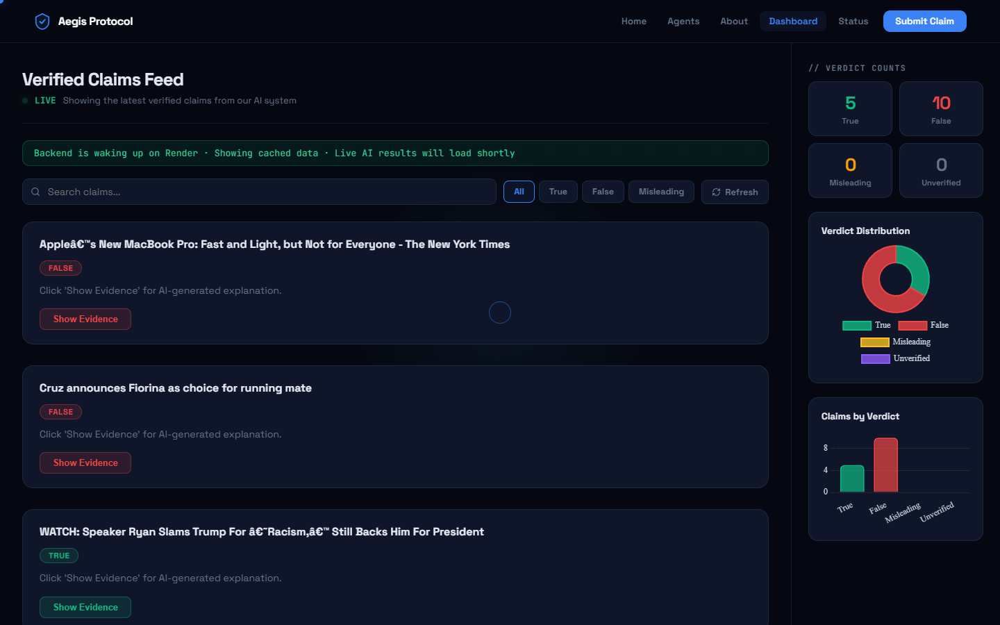
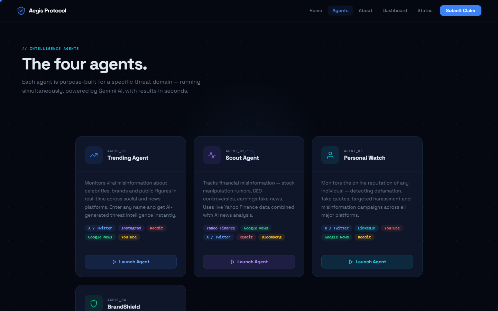

FastAPI + BackgroundTasks
API requests immediately return a unique tracking job. Asynchronous background workers transition the claim through pending → in_progress → completed | failed states with persisted diagnostic logs.
Autonomous Multi-Agent Threat Intelligence System
A production-grade multi-agent investigation system pairing deterministic SHA-256 claim deduplication, quantitative market volatility tracking (rolling Z-scores), and recurring 15-minute RSS ingestion with an asynchronous two-stage Gemini verification swarm and auditable Supabase persistence.
Aegis rejects the naive approach of prompting an LLM with "is this true?". Instead, it operates as a structured threat-intelligence platform designed to expose the difference between inorganic narrative attacks and organic sentiment shifts. The core architectural challenge is system orchestration: ingesting claims without duplicate inference, running parallel quantitative market scans, decoupling evidence discovery from verdict synthesis, enforcing JSON Schema contracts, and gracefully handling model rate limits.
The deployed architecture integrates a high-performance Vanilla JS single-page interface, a resilient Netlify serverless edge proxy with multi-key rotation, an asynchronous FastAPI backend on Render, recurring RSS ingestion loops, and Supabase PostgreSQL with vector similarity indexing.
The architecture explicitly isolates deterministic application tasks from probabilistic generative model execution. That boundary ensures rate limits, network timeouts, and model fallbacks never produce silent UI crashes.
API requests immediately return a unique tracking job. Asynchronous background workers transition the claim through pending → in_progress → completed | failed states with persisted diagnostic logs.
Browser clients call /.netlify/functions/gemini. The proxy protects API credentials, manages multi-key rotation, handles exponential backoffs, and seamlessly falls back from Gemini 2.5 Flash to 2.0 Flash.
Fetches historical closing prices and trade volume via Yahoo Finance proxies. Calculates rolling standard deviations and Z-scores to distinguish inorganic market shocks from natural volatility.
Claims, verified rebuttals, and extracted evidence are stored with vector embeddings for semantic similarity search, cross-claim deduplication, and forensic audit history.
The ingestion pipeline trims whitespace, strips punctuation variations, normalizes case, and generates a SHA-256 cryptographic hash. If the hash exists in the Supabase cache, the existing verified record returns instantly with 0ms LLM latency.
normalized_text → sha256_hash → cache_hit ? return : dispatch_jobFastAPI acknowledges submissions within 80ms by issuing a job ticket. The claim worker executes independently, updating the database record as stages complete so clients can poll or stream status updates.
pending → researching → synthesizing → completed | failedThe Research Agent is constrained to gathering supporting and contradictory evidence without passing judgment. The Investigator Agent then consumes this evidence as a structured payload, evaluating source credibility and generating a calibrated verdict (Confidence 0–100%, Severity Level, Category, and Structured Rebuttal).
Model responses are forced into an explicit JSON Schema. If an inference output violates the contract, a retry interceptor reprompts with temperature decay, guaranteeing that frontend UI parsers never encounter unexpected null or malformed fields.
The review interface explicitly informs operators when cold-start cloud containers are warming up, displaying clear badges for live verified data, vector-cached results, or benchmark dataset fallbacks.


| Subsystem | Source Path | Responsibility | Engineering Implementation Detail |
|---|---|---|---|
| API Orchestration | backend/main.py | Endpoints, CORS, background jobs, startup tasks | FastAPI, GZip middleware, connection pooling, graceful fallback routing |
| Claim Worker | backend/workers/claim_worker.py | Asynchronous execution pipeline | Database state transitions, timeout guards, exception logging |
| Agent Swarm | backend/agents/* | Two-stage research and verdict synthesis | Structured prompt orchestration, JSON Schema parsing, multi-key retry |
| Scout Engine | frontend/scout-agent.html | Financial anomaly & volatility correlation | Yahoo Finance proxy client, 5-day rolling standard deviations, Z-score computation |
| Trending Ingestion | backend/rss_ingestion.py | Recurring headline discovery | Google News RSS XML parser, 15-minute polling thread, SHA-256 deduplication |
| Edge Gateway | netlify/functions/gemini.js | Credential isolation & rate-limit proxy | Environment variable encryption, multi-key rotation, Gemini 2.5 → 2.0 fallback |
Integrate live headless web scraping for secondary citation verification, deploy automated precision-recall evaluation against the LIAR and FEVER benchmarks, and implement cross-encoder reranking for Supabase vector retrieval.